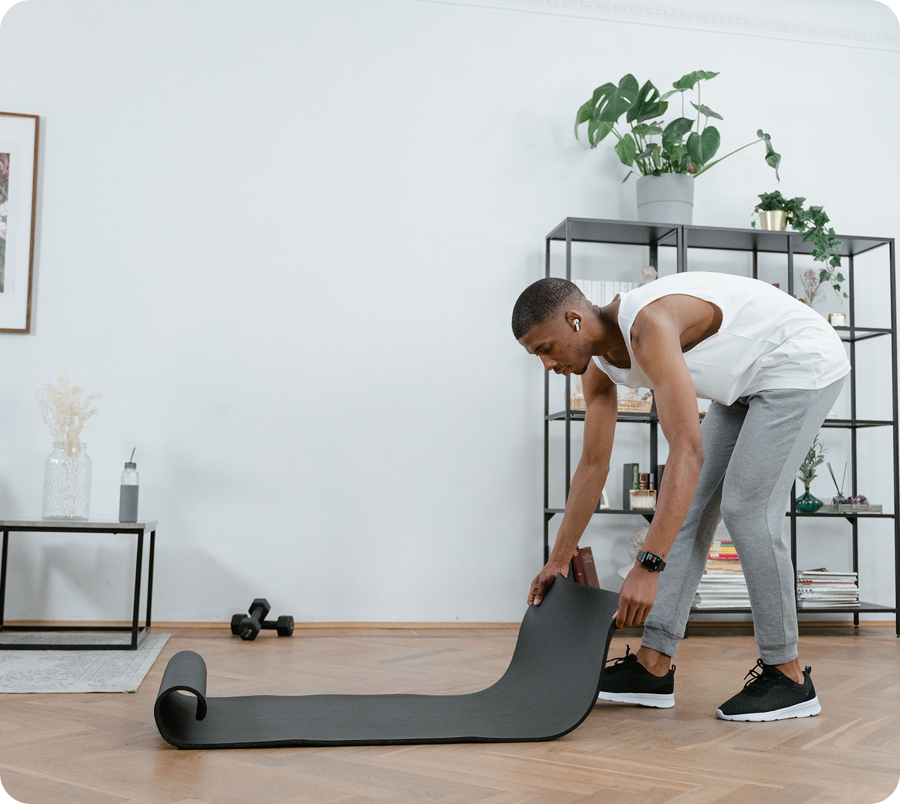
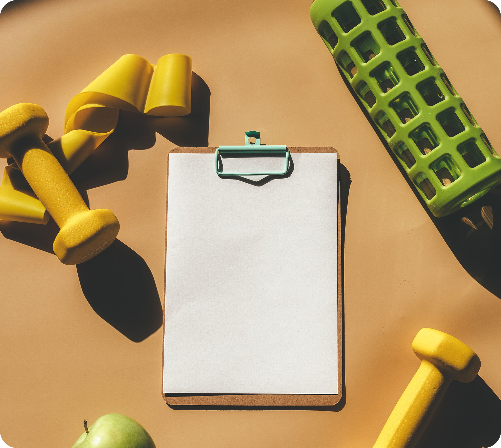
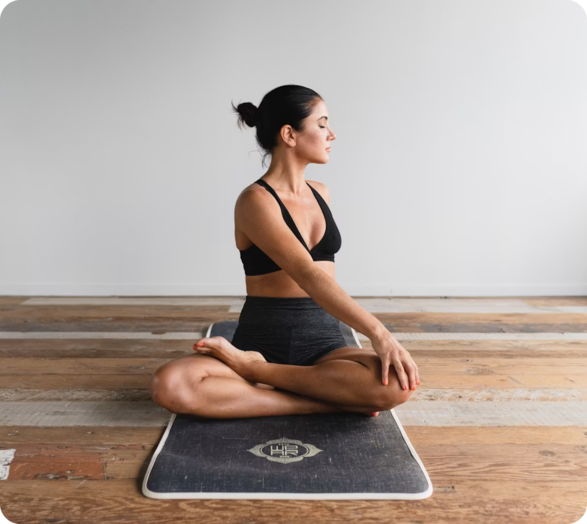
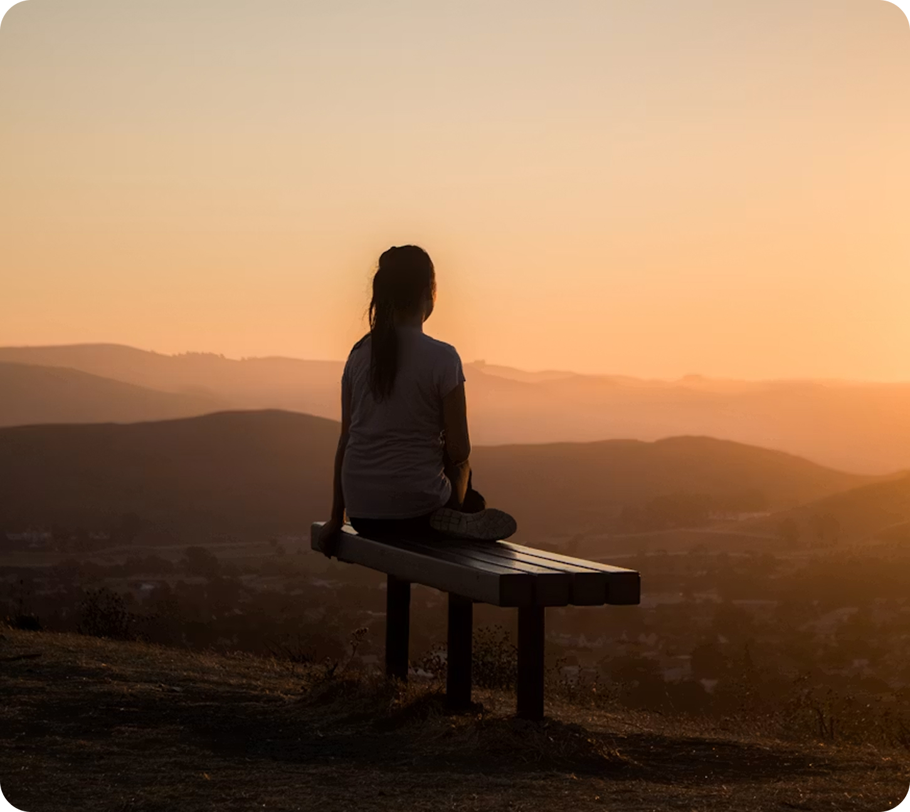
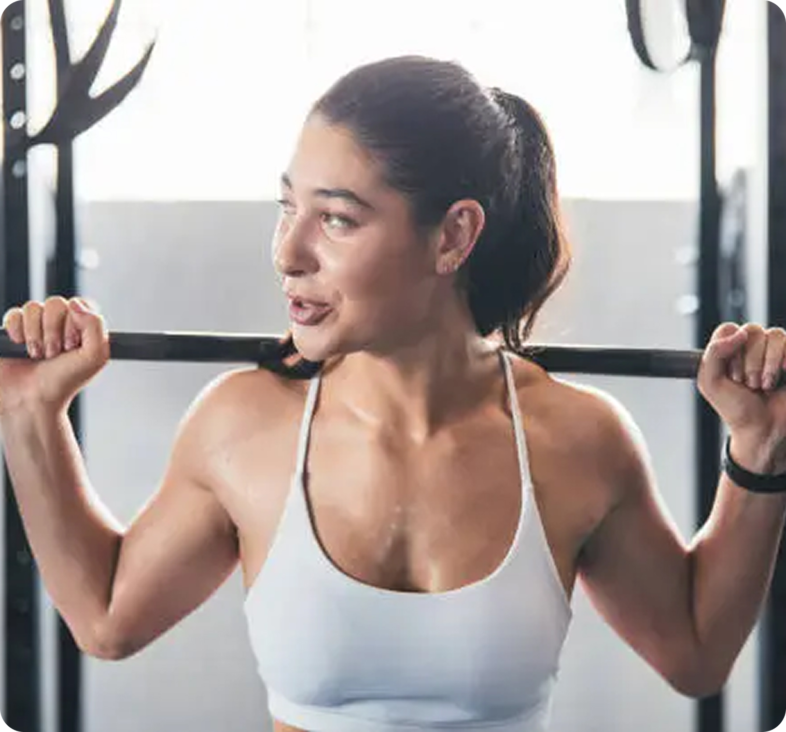
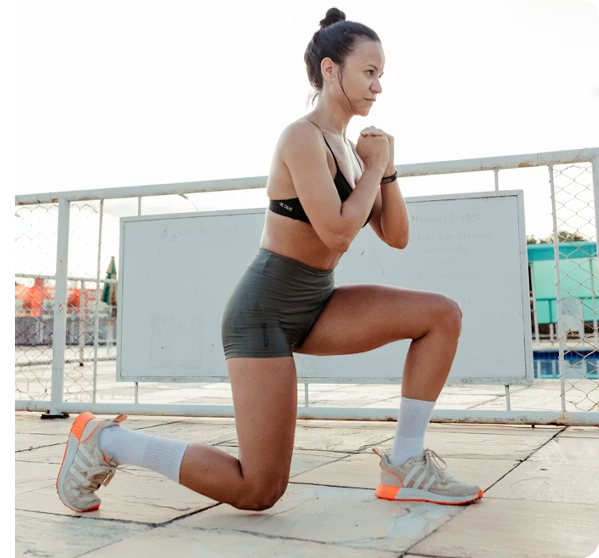
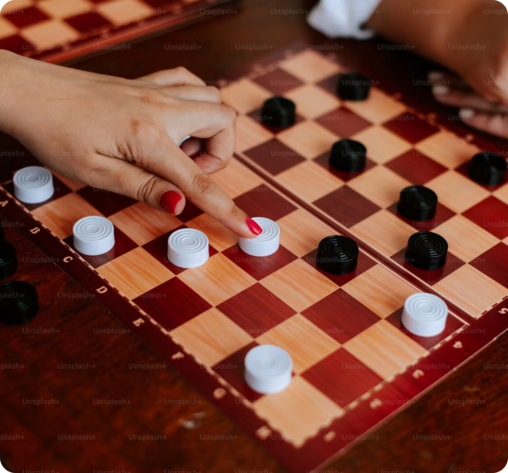
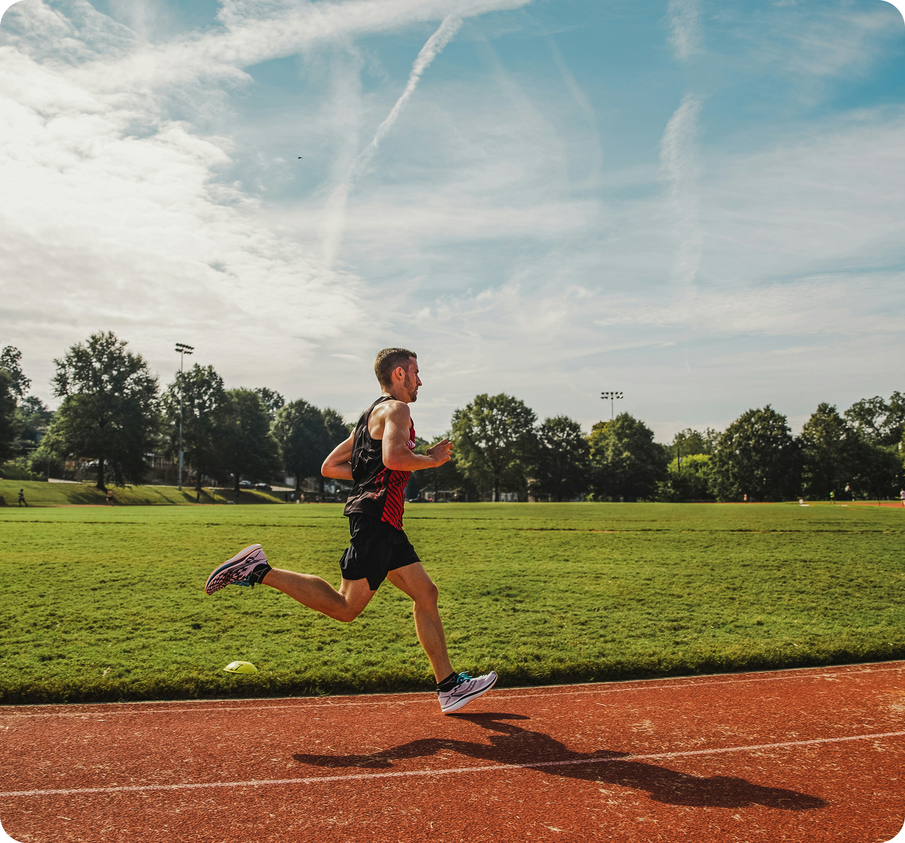

Por que é tão importante?
Sejam eles físicos ou mentais, os exercícios que realizamos são cruciais para um bom desenvolvimento do corpo. Sem a prática constante, por mais leve que seja, o sedentarismo começa a tomar lugar em nossa vida e a nos prejudicar tanto no presente quanto no futuro. De acordo com a OPAS (Organização Pan Americana de Saúde), o sedentarismo aumenta o risco de doenças cardiovasculares, como infarto do miocárdio e acidente vascular cerebral, além de diabetes tipo 2, demência e certos tipos de câncer, como mama e cólon.
 14.png)
Como começar?
Comece de maneira simples! Com atividades que fortalecem o
seu cérebro aos poucos e que se encaixam no seu dia a dia.
-

Prepare um ambiente agradável, para que isso não seja estressante para a sua mente!
-

Se prepare com o que você possa precisar, como água, alimentos e equipamentos.
-

Realize a prática com calma. Não tenha pressa e aproveite o momento!
-

Depois, faça contato com o ar livre ou repouse por um tempo, para ajudar o corpo a se acalmar.
Categorias de exercícios
-

Membros Superiores

Os membros superiores são essenciais para a realização das atividades do dia a dia, desde movimentos simples até tarefas que exigem força, coordenação e precisão. Por isso, estimulá-los e exercitá-los é fundamental para manter a funcionalidade, a autonomia e o bem-estar.
-

Membros Inferiores

Nossos membros inferiores são nosso apoio e constantemente precisamos exercitá-los! Estudos comparando grupos que realizaram apenas exercícios gerais e grupos que realizaram membros inferiores, apontou que aqueles que praticam exercícios nos membros inferiores demonstram maior aptidão física e maior resistência. Aos poucos e de maneira simples, vamos te ajudar a se desenvolver nessa área.
-

Exercícios Mentais

É extremamente importante manter sua mente afiada com exercícios mentais! Estudos comparando grupos que mantêm uma rotina comum e grupos que praticam exercícios de estimulação cognitiva apontaram que aqueles que exercitam a mente demonstram maior capacidade de foco, melhora na memória e raciocínio mais rápido. Aos poucos e de maneira simples, vamos te ajudar a desenvolver o seu potencial cognitivo.
-

Esportes

Esportes são uma maneira incrível de se conectar com pessoas, se manter bem e desenvolver áreas mentais e físicas! Estudos comparando pessoas que realizam apenas atividades físicas básicas do dia a dia e grupos que praticam esportes regularmente apontaram que aqueles que se dedicam a uma modalidade esportiva demonstram melhor saúde cardiovascular, mais disposição e menor nível de estresse. Aos poucos e de maneira simples, vamos te ajudar a se desenvolver no seu esporte favorito.